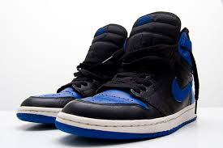
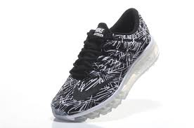
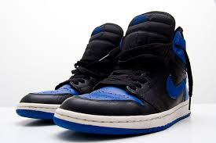
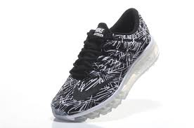

Nike
«Nike, Inc.» (МФА: [ˈnaɪki], NYSE: NKE) — американська компанія, виробник спортивних товарів. Штаб-квартира у західному передмісті Портланда Бівертоні, Орегон
Компанію засновано в 1964 році студентом Філом Найтом, бігуном на середні дистанції в команді Університету Орегону, та його тренером Біллом Боуерманом у Юджині. Спочатку компанія носила назву «Blue Ribbon Sports» й спеціалізувалась на замовленнях кросівок в азійських країнах й наступному продажу їх на американському ринку.
У 1966 році компанія відкрила перший роздрібний магазин. У 1971 році вперше з'явилась торговельна марка «Nike» — під цією назвою були випущені футбольні бутси. У 1978 році «Blue Ribbon Sports» офіційно перейменовано в «Nike, Inc».
23 жовтня 2007 року компанія купила за 580 млн доларів бренд «Umbro», виробника спортивного одягу та взуття.
Діяльність
«Nike» — один з найбільших виробників спортивних товарів у світі. Продукція випускається під марками «Nike», «Air Jordan», «Total 90», «Nike Golf», «Team Starter» та ін. Також «Nike» контролює компанії, які випускають товари під брендами «Bauer», «Cole Haan», «Converse», й «Hurley International»
.jpg)
.jpg)  
 